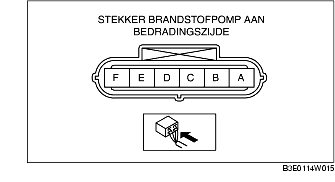

CONTROLE BRANDSTOFPOMP [ZJ, Z6, LF]
B3E011413350W03
Controle werking brandstofpomp
1. Sluit het WDS of een vergelijkbare tester aan op diagnosestekker 2.
2. Verwijder de tankdop.
3. Zet het contact in stand ON.
4. Schakel met behulp van de simulatiefunctie FP de brandstofpomp in en controleer of de werking te horen is.
-
• Meet de spanning op stekkeraansluiting A van de brandstofpomp (bedradingszijde) als de pomp geen geluid maakt.

-
- Controleer de volgende punten indien volgens specificatie:
-
• Doorverbinding brandstofpomp
-
- Controleer het volgende indien niet volgens specificatie:
-
• Brandstofpomprelais
-
• Bedrading en stekkers tussen hoofdrelais-brandstofpomprelais-brandstofpomp
-
Standaard
-
B+ (contact in stand ON)
Controle van doorverbinding
1. Neem de minkabel van de accu los.
2. Neem de stekker van de brandstofpomp los.
3. Controleer de doorverbinding tussen aansluiting A-E van de brandstofpomp.
-
• Als er doorverbinding is, voer dan de 'Controle van circuit op onderbreking/kortsluiting' uit.
-
• Vervang de brandstofpomp als er geen doorverbinding is.
Controle van circuit op onderbreking/kortsluiting
1. Controleer de volgende bedradingen op onderbreking of kortsluiting (controle doorverbinding).
Onderbreking
-
• Als er geen doorverbinding is, is het circuit onderbroken. Repareer of vervang de bedrading.
-
- Aansluiting A brandstofpomp en aansluiting D brandstofpomprelais
-
- Aansluiting E brandstofpomp en massa
Kortsluiting
-
• Als er doorverbinding is, is er kortsluiting in het circuit. Repareer of vervang de bedrading.
-
- Aansluiting A brandstofpomp en massa
-
- Aansluiting E brandstofpomp en voeding
Controle statische brandstofdruk
-
Aanwijzing
-
• De controle van de statische brandstofdruk kan niet worden uitgevoerd, omdat de drukregelaar in de brandstofpomp geïntegreerd is.